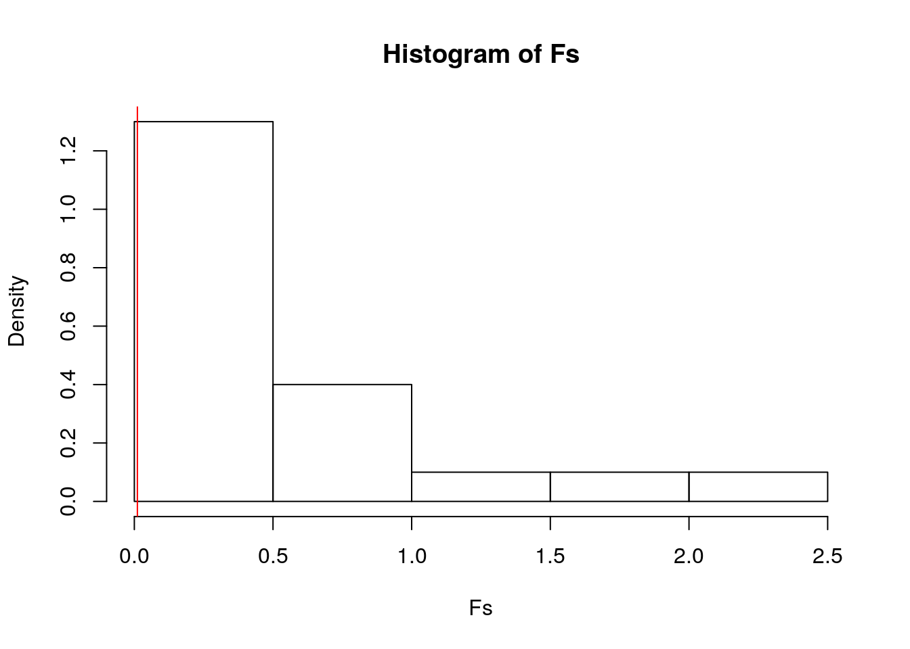
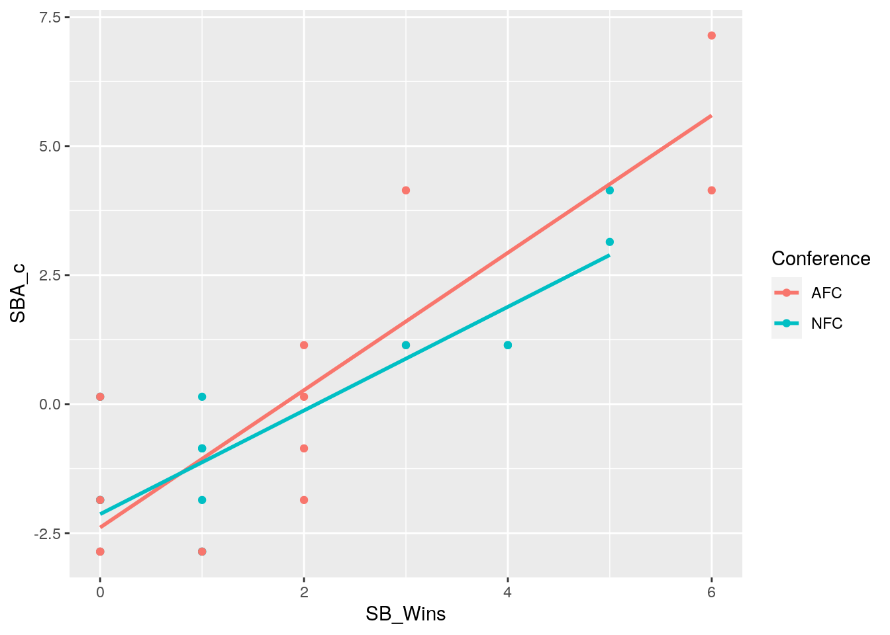
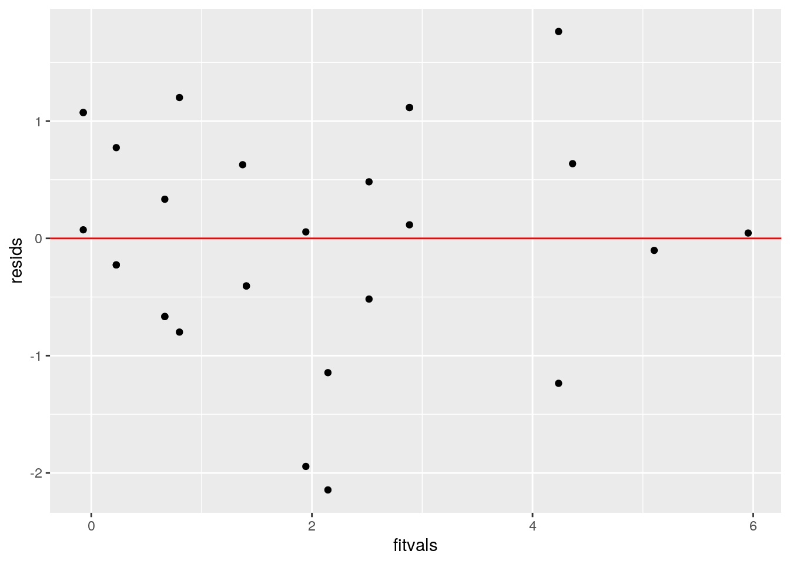
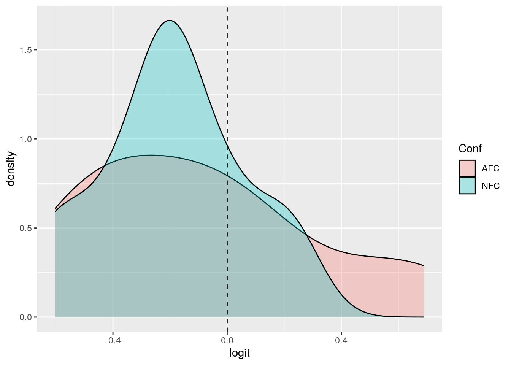
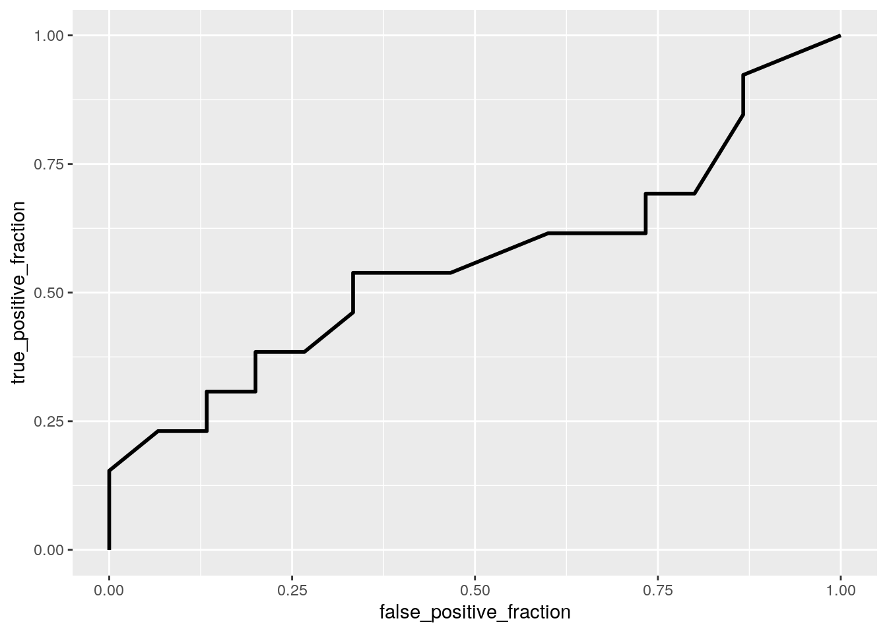

Devin Williams DKW732
Introduction: My original data consisted of 60 observations with 5 variables. The 5 variables were State, NFL Team, Superbowl appearances, Superbowl wins, and the conference,NFC or AFC, of the football team. I then added Superbowl win percentage, population of state,and a binary column with 1 indicating AFC conference and 0 indicating NFC conference. I then deleted the observations that did not have a football team or has never been to a Superbowl.
library(readr)
library(tidyverse)## ── Attaching packages ────────## ✓ ggplot2 3.3.2 ✓ dplyr 1.0.2
## ✓ tibble 3.0.3 ✓ stringr 1.4.0
## ✓ tidyr 1.1.1 ✓ forcats 0.5.0
## ✓ purrr 0.3.4## ── Conflicts ─────────────────
## x dplyr::filter() masks stats::filter()
## x dplyr::lag() masks stats::lag()library(dplyr)
library(rstatix)##
## Attaching package: 'rstatix'## The following object is masked from 'package:stats':
##
## filterlibrary(sandwich); library(lmtest)## Loading required package: zoo##
## Attaching package: 'zoo'## The following objects are masked from 'package:base':
##
## as.Date, as.Date.numericFBall <- read_csv("Project 2 Football Just Conf - Sheet1.csv")## Parsed with column specification:
## cols(
## State = col_character(),
## NFL_Team = col_character(),
## SB_Appearances = col_double(),
## SB_Wins = col_double(),
## Conference = col_character()
## )State_POP <- read_csv("State POP - Sheet1 (1).csv")## Parsed with column specification:
## cols(
## State = col_character(),
## Population = col_number()
## )FBall<-FBall%>%full_join(State_POP)## Joining, by = "State"FBall<-FBall%>%filter(!is.na(NFL_Team))
FBall<-FBall%>%mutate(SB_W_PCT=SB_Wins/SB_Appearances)
FBall<-FBall%>%filter(!is.na(NFL_Team))
FBall<-FBall%>%mutate(SB_W_PCT=SB_Wins/SB_Appearances)
FBall<-FBall%>%filter(!is.na(SB_W_PCT))
FBall<-FBall%>%mutate(AFC_or_NFC=ifelse(FBall$Conference=="AFC",1,0))
glimpse(FBall)## Rows: 28
## Columns: 8
## $ State <chr> "AZ", "CA", "CA", "CA", "CO", "FL", "FL", "GA", "IL", …
## $ NFL_Team <chr> "Cardinals", "Rams", "Chargers", "49ers", "Broncos", "…
## $ SB_Appearances <dbl> 1, 4, 1, 7, 8, 5, 1, 2, 2, 4, 1, 2, 11, 4, 3, 5, 5, 1,…
## $ SB_Wins <dbl> 0, 1, 0, 5, 3, 2, 1, 0, 1, 2, 1, 2, 6, 0, 2, 3, 4, 1, …
## $ Conference <chr> "NFC", "NFC", "AFC", "NFC", "AFC", "AFC", "NFC", "NFC"…
## $ Population <dbl> 7278717, 39512223, 39512223, 39512223, 5758736, 214777…
## $ SB_W_PCT <dbl> 0.0000000, 0.2500000, 0.0000000, 0.7142857, 0.3750000,…
## $ AFC_or_NFC <dbl> 0, 0, 1, 0, 1, 1, 0, 0, 0, 1, 0, 1, 1, 0, 1, 1, 0, 1, …FBall%>%summarize_all(n_distinct)## # A tibble: 1 x 8
## State NFL_Team SB_Appearances SB_Wins Conference Population SB_W_PCT
## <int> <int> <int> <int> <int> <int> <int>
## 1 22 28 8 7 2 22 14
## # … with 1 more variable: AFC_or_NFC <int>#1
group<-FBall$Conference
DV <- FBall %>% select(SB_Wins,SB_Appearances, SB_W_PCT)
sapply(split(DV,group), mshapiro_test)## AFC NFC
## statistic 0.9156795 0.8935484
## p.value 0.2192161 0.0758993box_m(DV,group)## # A tibble: 1 x 4
## statistic p.value parameter method
## <dbl> <dbl> <dbl> <chr>
## 1 4.18 0.653 6 Box's M-test for Homogeneity of Covariance Matric…man1<-manova(cbind(SB_Wins,SB_Appearances,SB_W_PCT)~Conference, data=FBall)
summary(man1)## Df Pillai approx F num Df den Df Pr(>F)
## Conference 1 0.026403 0.21695 3 24 0.8837
## Residuals 26summary.aov(man1)## Response SB_Wins :
## Df Sum Sq Mean Sq F value Pr(>F)
## Conference 1 0.534 0.5341 0.1398 0.7115
## Residuals 26 99.323 3.8201
##
## Response SB_Appearances :
## Df Sum Sq Mean Sq F value Pr(>F)
## Conference 1 3.388 3.3875 0.4786 0.4952
## Residuals 26 184.041 7.0785
##
## Response SB_W_PCT :
## Df Sum Sq Mean Sq F value Pr(>F)
## Conference 1 0.0015 0.001509 0.0114 0.9158
## Residuals 26 3.4440 0.132463FBall%>%group_by(Conference)%>%summarize(mean(SB_Wins),mean(SB_Appearances),mean(SB_W_PCT))## `summarise()` ungrouping output (override with `.groups` argument)## # A tibble: 2 x 4
## Conference `mean(SB_Wins)` `mean(SB_Appearances)` `mean(SB_W_PCT)`
## <chr> <dbl> <dbl> <dbl>
## 1 AFC 2.08 4.23 0.449
## 2 NFC 1.8 3.53 0.464pairwise.t.test(FBall$SB_Appearances, FBall$SB_Wins,FBall$SB_W_PCT, p.adj = "none")## Warning in if (paired & pool.sd) stop("pooling of SD is incompatible with paired
## tests"): the condition has length > 1 and only the first element will be used## Warning in if (pool.sd) {: the condition has length > 1 and only the first
## element will be used##
## Pairwise comparisons using t tests with non-pooled SD
##
## data: FBall$SB_Appearances and FBall$SB_Wins
##
## 0 1 2 3 4 5
## 1 0.97805 - - - - -
## 2 0.12987 0.13725 - - - -
## 3 0.04211 0.04172 0.11134 - - -
## 4 0.00033 0.00080 0.10273 0.42265 - -
## 5 0.00447 0.00405 0.00985 0.27884 0.12567 -
## 6 0.10473 0.10334 0.11230 0.19844 0.20483 0.39587
##
## P value adjustment method: none1-.95^6## [1] 0.2649081.05/6## [1] 0.008333333All of my Manova assumptions were met.There also were not any significant differences in the means of my numerical values when grouped by Conference.A total of 6 tests was ran, a manova, an anova and four post hoc tests. This does not include the assumption tests.There is a 26.5% chance a type 1 error was made.The bonfferonii correction should be .008 (still significant).The Manova assumptions were met because the NFL divided up their teams equally by conference. There is a significant difference in teams that have had 3-5 SB appearancesand 0 wins,3-5 SB appearances and only 1 win.
summary(aov(SB_W_PCT~Conference,data=FBall))## Df Sum Sq Mean Sq F value Pr(>F)
## Conference 1 0.002 0.00151 0.011 0.916
## Residuals 26 3.444 0.13246OBS_F<-.011
set.seed(19)
Fs<-replicate(20,{ #do everything in curly braces 5000 times and save the output
new<-FBall%>%mutate(SB_W_PCT=sample(SB_W_PCT)) #randomly permute response variable (len)
#compute the F-statistic by hand
SSW<- new%>%group_by(Conference)%>%summarize(SSW=sum((SB_W_PCT-mean(SB_W_PCT))^2))%>%
summarize(sum(SSW))%>%pull
SSB<- new%>%mutate(mean=mean(SB_W_PCT))%>%group_by(Conference)%>%mutate(groupmean=mean(SB_W_PCT))%>%
summarize(SSB=sum((mean-groupmean)^2))%>%summarize(sum(SSB))%>%pull
(SSB/1)/(SSW/14) #compute F statistic (num df = K-1 = 3-1, denom df = N-K = 60-3)
})%>%glimpse## `summarise()` ungrouping output (override with `.groups` argument)
## `summarise()` ungrouping output (override with `.groups` argument)
## `summarise()` ungrouping output (override with `.groups` argument)
## `summarise()` ungrouping output (override with `.groups` argument)
## `summarise()` ungrouping output (override with `.groups` argument)
## `summarise()` ungrouping output (override with `.groups` argument)
## `summarise()` ungrouping output (override with `.groups` argument)
## `summarise()` ungrouping output (override with `.groups` argument)
## `summarise()` ungrouping output (override with `.groups` argument)
## `summarise()` ungrouping output (override with `.groups` argument)
## `summarise()` ungrouping output (override with `.groups` argument)
## `summarise()` ungrouping output (override with `.groups` argument)
## `summarise()` ungrouping output (override with `.groups` argument)
## `summarise()` ungrouping output (override with `.groups` argument)
## `summarise()` ungrouping output (override with `.groups` argument)
## `summarise()` ungrouping output (override with `.groups` argument)
## `summarise()` ungrouping output (override with `.groups` argument)
## `summarise()` ungrouping output (override with `.groups` argument)
## `summarise()` ungrouping output (override with `.groups` argument)
## `summarise()` ungrouping output (override with `.groups` argument)
## `summarise()` ungrouping output (override with `.groups` argument)
## `summarise()` ungrouping output (override with `.groups` argument)
## `summarise()` ungrouping output (override with `.groups` argument)
## `summarise()` ungrouping output (override with `.groups` argument)
## `summarise()` ungrouping output (override with `.groups` argument)
## `summarise()` ungrouping output (override with `.groups` argument)
## `summarise()` ungrouping output (override with `.groups` argument)
## `summarise()` ungrouping output (override with `.groups` argument)
## `summarise()` ungrouping output (override with `.groups` argument)
## `summarise()` ungrouping output (override with `.groups` argument)
## `summarise()` ungrouping output (override with `.groups` argument)
## `summarise()` ungrouping output (override with `.groups` argument)
## `summarise()` ungrouping output (override with `.groups` argument)
## `summarise()` ungrouping output (override with `.groups` argument)
## `summarise()` ungrouping output (override with `.groups` argument)
## `summarise()` ungrouping output (override with `.groups` argument)
## `summarise()` ungrouping output (override with `.groups` argument)
## `summarise()` ungrouping output (override with `.groups` argument)
## `summarise()` ungrouping output (override with `.groups` argument)
## `summarise()` ungrouping output (override with `.groups` argument)## num [1:20] 0.41687 0.14395 0.56021 0.31051 0.00127 ...hist(Fs, prob=T); abline(v = OBS_F, col="red",add=T)## Warning in int_abline(a = a, b = b, h = h, v = v, untf = untf, ...): "add" is
## not a graphical parameter
mean(Fs>OBS_F) #p-value## [1] 0.8The null hypothesis is that there is not a difference between SB win percentage means between conferences. The alternative hypothesis is that there is a difference between SB win percentage means between conferences.The p-value is effectively .8, which means I accept my null hypothesis. Of my 5000 F statistics, some produced an F-Statistic higher than my observed so there is not a significant relationship between conference and SB win percentage. My replication is at 20 instead of at 5000, due to reducing the number of errors in the html.
#3
FBall$SBA_c=FBall$SB_Appearances-mean(FBall$SB_Appearances)
FBall$SBW_c<-FBall$SB_Wins-mean(FBall$SB_Wins)
Fbfit<-lm(SB_Wins~Conference*SBA_c, data= FBall)
summary(Fbfit)##
## Call:
## lm(formula = SB_Wins ~ Conference * SBA_c, data = FBall)
##
## Residuals:
## Min 1Q Median 3Q Max
## -2.14503 -0.55475 0.05039 0.67112 1.76398
##
## Coefficients:
## Estimate Std. Error t value Pr(>|t|)
## (Intercept) 1.86290 0.28277 6.588 8.18e-07 ***
## ConferenceNFC 0.17651 0.38710 0.456 0.653
## SBA_c 0.57282 0.09302 6.158 2.31e-06 ***
## ConferenceNFC:SBA_c 0.16653 0.15566 1.070 0.295
## ---
## Signif. codes: 0 '***' 0.001 '**' 0.01 '*' 0.05 '.' 0.1 ' ' 1
##
## Residual standard error: 1.012 on 24 degrees of freedom
## Multiple R-squared: 0.7539, Adjusted R-squared: 0.7232
## F-statistic: 24.51 on 3 and 24 DF, p-value: 1.745e-07After mean centering the Superbowl appearances,the odss of having Superbowl wins go up if the team is from the NFC by .177,go ups by .57 per Superbowl appearances, and up by .167 if they are NFC and have Superbowl appearnces.
ggplot(FBall, aes(SB_Wins,SBA_c, color = Conference)) +geom_point()+geom_smooth(method="lm", se=F)## `geom_smooth()` using formula 'y ~ x'
bptest(Fbfit)##
## studentized Breusch-Pagan test
##
## data: Fbfit
## BP = 0.6431, df = 3, p-value = 0.8865resids<-Fbfit$residuals
fitvals<-Fbfit$fitted.values
ggplot()+geom_point(aes(fitvals,resids))+geom_hline(yintercept=0, color='red')
ks.test(resids, "pnorm", mean=0, sd(resids)) ## Warning in ks.test(resids, "pnorm", mean = 0, sd(resids)): ties should not be
## present for the Kolmogorov-Smirnov test##
## One-sample Kolmogorov-Smirnov test
##
## data: resids
## D = 0.083951, p-value = 0.9891
## alternative hypothesis: two-sided(sum((FBall$SB_Wins-mean(FBall$SB_Wins))^2)-sum(Fbfit$residuals^2))/sum((FBall$SB_Wins-mean(FBall$SB_Wins))^2)## [1] 0.7539392My data passes assumptions of linearity,normality, and homoskedasticity. My model explains 75% of the variation in the outcome.
coeftest(Fbfit)[,1:2]## Estimate Std. Error
## (Intercept) 1.8629017 0.28277373
## ConferenceNFC 0.1765071 0.38710028
## SBA_c 0.5728218 0.09302478
## ConferenceNFC:SBA_c 0.1665291 0.15565503coeftest(Fbfit, vcov=vcovHC(Fbfit))[,1:2]## Estimate Std. Error
## (Intercept) 1.8629017 0.30032087
## ConferenceNFC 0.1765071 0.40051388
## SBA_c 0.5728218 0.09551774
## ConferenceNFC:SBA_c 0.1665291 0.13688763The standard errors only slightly changed when robust and are not significant.
set.seed(4999)
samp_distn<-replicate(5000, {
boot_FB <- sample_frac(FBall, replace=TRUE) #take bootstrap sample of rows
fit <-lm(SB_Wins~Conference*SBA_c, data= boot_FB) #fit model on bootstrap sample
coef(fit) #save coefs
})
samp_distn %>% t %>% as.data.frame %>% summarize_all(sd)## (Intercept) ConferenceNFC SBA_c ConferenceNFC:SBA_c
## 1 0.2864812 0.3980608 0.1079194 NAclass_diag <- function(probs,truth){
#CONFUSION MATRIX: CALCULATE ACCURACY, TPR, TNR, PPV
tab<-table(factor(probs>.5,levels=c("FALSE","TRUE")),truth)
acc=sum(diag(tab))/sum(tab)
sens=tab[2,2]/colSums(tab)[2]
spec=tab[1,1]/colSums(tab)[1]
ppv=tab[2,2]/rowSums(tab)[2]
f1=2*(sens*ppv)/(sens+ppv)
if(is.numeric(truth)==FALSE & is.logical(truth)==FALSE) truth<-as.numeric(truth)-1
#CALCULATE EXACT AUC
ord<-order(probs, decreasing=TRUE)
probs <- probs[ord]; truth <- truth[ord]
TPR=cumsum(truth)/max(1,sum(truth))
FPR=cumsum(!truth)/max(1,sum(!truth))
dup<-c(probs[-1]>=probs[-length(probs)], FALSE)
TPR<-c(0,TPR[!dup],1); FPR<-c(0,FPR[!dup],1)
n <- length(TPR)
auc<- sum( ((TPR[-1]+TPR[-n])/2) * (FPR[-1]-FPR[-n]) )
data.frame(acc,sens,spec,ppv,f1,auc)
}#5
set.seed(4999)
Fbfit2<-glm(AFC_or_NFC~SB_Wins+SB_Appearances, data=FBall, family="binomial")
summary(Fbfit2)##
## Call:
## glm(formula = AFC_or_NFC ~ SB_Wins + SB_Appearances, family = "binomial",
## data = FBall)
##
## Deviance Residuals:
## Min 1Q Median 3Q Max
## -1.2755 -1.0949 -0.9347 1.2185 1.4413
##
## Coefficients:
## Estimate Std. Error z value Pr(>|z|)
## (Intercept) -0.6423 0.7283 -0.882 0.378
## SB_Wins -0.1771 0.3984 -0.444 0.657
## SB_Appearances 0.2175 0.2948 0.738 0.461
##
## (Dispersion parameter for binomial family taken to be 1)
##
## Null deviance: 38.673 on 27 degrees of freedom
## Residual deviance: 37.966 on 25 degrees of freedom
## AIC: 43.966
##
## Number of Fisher Scoring iterations: 4probs<-predict(Fbfit2,type="response") #get predicted probs from the model
table(predict=as.numeric(probs>.5),truth=FBall$AFC_or_NFC)%>%addmargins%>%t()## predict
## truth 0 1 Sum
## 0 12 3 15
## 1 8 5 13
## Sum 20 8 28class_diag(probs,FBall$AFC_or_NFC)## acc sens spec ppv f1 auc
## 1 0.6071429 0.3846154 0.8 0.625 0.4761905 0.5589744The logodds of being AFC goes down .1771 per Suber Bowl Win, and up .2175 per Superbowl appearance.The accuracy is .607 which means that it was able to correctly classify 60 cases. The tpr,tnr,ppv, and auc was .385, .8,.625, and .559, respectively. This means that the model is bad based off the auc classificiation is bad. This model could tell which team were AFC pretty well, but could not tell which teams were NFC that well. The precision of this test was also not the greatest.
FBall$logit<-predict(Fbfit2) #get predicted log-odds (logits)
#plot logit scores for each truth category
FBall%>%mutate(Conf=factor(Conference,levels=c("AFC","NFC")))%>%ggplot(aes(logit, fill=Conf))+geom_density(alpha=.3)+
geom_vline(xintercept=0,lty=2)
library(plotROC)
ROCplot<-ggplot(FBall)+geom_roc(aes(d=AFC_or_NFC,m=probs), n.cuts=0)
ROCplot
#as soon as you build your ROC curve, you can compute the AUC with
calc_auc(ROCplot)## PANEL group AUC
## 1 1 -1 0.5589744This model is bad due to it having a low auc of .559.
#6
Fbfit3<-lm(AFC_or_NFC~SB_W_PCT+Population+SB_Wins+SB_Appearances,data = FBall,family="binomial")## Warning: In lm.fit(x, y, offset = offset, singular.ok = singular.ok, ...) :
## extra argument 'family' will be disregardedprobs2<-predict(Fbfit3,type="response") #get predicted probs from the model
class_diag(probs2,FBall$AFC_or_NFC)## acc sens spec ppv f1 auc
## 1 0.6785714 0.4615385 0.8666667 0.75 0.5714286 0.6307692set.seed(4999)
k=5 #choose number of folds
data<-FBall[sample(nrow(FBall)),] #randomly order rows
folds<-cut(seq(1:nrow(FBall)),breaks=k,labels=F) #create folds
diags<-NULL
for(i in 1:k){
## Create training and test sets
train<-data[folds!=i,]
test<-data[folds==i,]
truth<-test$AFC_or_NFC ## Truth labels for fold i
## Train model on training set (all but fold i)
fit5<-glm(AFC_or_NFC~SB_W_PCT+Population+SB_Wins+SB_Appearances,data=train,family="binomial")
## Test model on test set (fold i)
probs3<-predict(fit5,newdata = test,type="response")
#Get diagnostics for fold i
diags<-rbind(diags,class_diag(probs3,truth))
}
summarize_all(diags,mean) #average diagnostics across all k folds## acc sens spec ppv f1 auc
## 1 0.28 0.2666667 0.3333333 0.2066667 NaN 0.3This model had an acc,tpr,tnr, ppv, and auc of .28,.267,.333,.207, and auc of .3 respectively. All of the classification diagnostics went down from the previous model which represents that the previous model may have been a coincidence with its predicting abilities.An AUC as low as .3 means that this model is very bad for predicting.
library(glmnet)## Loading required package: Matrix##
## Attaching package: 'Matrix'## The following objects are masked from 'package:tidyr':
##
## expand, pack, unpack## Loaded glmnet 4.0-2y<-as.matrix(FBall$AFC_or_NFC) #grab response
FBall_preds<-model.matrix(AFC_or_NFC~SB_W_PCT+Population+SB_Wins+SB_Appearances,data=FBall)[,-1] #predictors (drop intercept)
cv<-cv.glmnet(FBall_preds,y,family="binomial")## Warning: Option grouped=FALSE enforced in cv.glmnet, since < 3 observations per
## foldlasso_fit<-glmnet(FBall_preds,y,family="binomial",lambda=cv$lambda.1se)
coef(lasso_fit)## 5 x 1 sparse Matrix of class "dgCMatrix"
## s0
## (Intercept) -0.1431008
## SB_W_PCT 0.0000000
## Population .
## SB_Wins .
## SB_Appearances .None of my variables were retained, so I just selected the Superbowl win percentage and ran that in my updated model.
set.seed(4999)
k=5 #choose number of folds
data<-FBall[sample(nrow(FBall)),] #randomly order rows
folds<-cut(seq(1:nrow(FBall)),breaks=k,labels=F) #create folds
diags<-NULL
for(i in 1:k){
## Create training and test sets
train<-data[folds!=i,]
test<-data[folds==i,]
truth<-test$AFC_or_NFC ## Truth labels for fold i
## Train model on training set (all but fold i)
fit6<-glm(AFC_or_NFC~SB_W_PCT,data=train,family="binomial")
## Test model on test set (fold i)
probs4<-predict(fit6,newdata = test,type="response")
#Get diagnostics for fold i
diags<-rbind(diags,class_diag(probs4,truth))
}
summarize_all(diags,mean) #average diagnostics across all k folds## acc sens spec ppv f1 auc
## 1 0.28 0.1666667 0.4166667 0.15 NaN 0.2097222This model had an acc,tpr,tnr, ppv, and auc of .28,.167,.417,.15, and auc of .20 respectively. The AUC of this model went down significantly to .209, meaning that the model is unlikely to predict anything from the data.
Note that the echo = FALSE parameter was added to the code chunk to prevent printing of the R code that generated the plot.